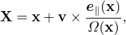
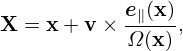

Using the chain-rule, the spatial gradient ∂fp∕∂x is written
|
| (21) |
From the deï¬nition of X, Eq. (13), we obtain
 | (22) |
where I is the unit dyad. From the deï¬nition of 𝜀, we obtain
 | (23) |
where E0 = −∂Φ0∕∂x. Using the above results, equation (21) is written as
![∂f ∂f [ ∂ (e ) ] ∂f q ∂f ∂μ ∂f ∂α∂f
--p |v = --g+ v × --- -∥ ⋅--g − --E0--g + -----g+ ----g .
∂x ∂X ∂x Ω ∂X m ∂𜀠∂x ∂μ ∂x ∂α](nonlinear_gyrokinetic_equation26x.png) | (24) |
As mentioned above, the partial derivative ∂∕∂x is taken by holding v constant. Since B0 is spatially
varying, v⊥ is spatially varying when holding v constant. Therefore  and  are generally nonzero.
The explicit expressions of these two derivatives are needed later in the derivation of the gyrokinetic
equation and is discussed in Appendix H.
and  are generally nonzero.
The explicit expressions of these two derivatives are needed later in the derivation of the gyrokinetic
equation and is discussed in Appendix H.
For notation ease, deï¬ne
![[ ∂ (e ) ] ∂
λB1 = v × --- -∥ ⋅---,
∂x Ω ∂X](nonlinear_gyrokinetic_equation29x.png) | (25) |
and
|
| (26) |
then expression (24) is written as
![∂fp ∂fg q ∂fg
∂x-|v =-∂X + [λB1 + λB2]fg − m-E0 ∂𝜀-.](nonlinear_gyrokinetic_equation31x.png) | (27) |